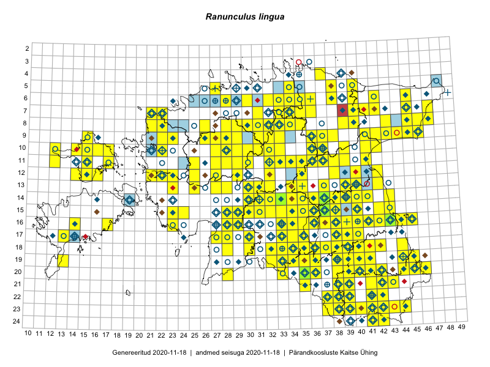

Ranunculus lingua
Uuendatud: 2016-12-07
Kaardile koondatud taksonid: Ranunculus lingua L.

Kaart põhineb 195 vaatlusel. Taime on leitud 151 ruudust.
| Ruut | Vaatleja(d) | Vaatlusaeg | Kirje tüüp | Viide andmebaasikirjele |
|---|---|---|---|---|
| 07-42 | Toomas Kukk, Peedu Saar | 2014-09-25 | ruut/ala | vaata PlutoFis |
| 14-41 | Peedu Saar, Ott Luuk | 2015-06-21 | ruut/ala | vaata PlutoFis |
| 11-35 | Ott Luuk, Peedu Saar | 2015-07-27 | ruut/ala | vaata PlutoFis |
| 15-38 | Peedu Saar | 2015-07-14 | ruut/ala | vaata PlutoFis |
| 16-41 | Peedu Saar, Eerik Leibak | 2015-07-30 | ruut/ala | vaata PlutoFis |
| 10-33 | Peedu Saar, Liina Oja | 2015-06-08 | ruut/ala | vaata PlutoFis |
| 23-43 | Ott Luuk, Peedu Saar | 2015-08-12 | ruut/ala | vaata PlutoFis |
| 14-31 | Peedu Saar, Liina Oja | 2015-06-10 | ruut/ala | vaata PlutoFis |
| 15-29 | Peedu Saar, Liina Oja | 2015-06-11 | ruut/ala | vaata PlutoFis |
| 13-35 | Peedu Saar, Liina Oja | 2015-06-12 | ruut/ala | vaata PlutoFis |
| 07-47 | Peedu Saar, Sander Laherand | 2015-05-31 | ruut/ala | vaata PlutoFis |
| 18-40 | Malle Leht | 2015-07-25 | ruut/ala | vaata PlutoFis |
| 15-30 | Tiit Hallikma, Toomas Kukk | 2015-06-10 | ruut/ala | vaata PlutoFis |
| 18-40 | Malle Leht | 2015-07-27 | ruut/ala | vaata PlutoFis |
| 15-31 | Toomas Kukk, Tiit Hallikma | 2015-06-10 | ruut/ala | vaata PlutoFis |
| 09-45 | Peedu Saar, Liina Oja | 2015-07-24 | ruut/ala | vaata PlutoFis |
| 14-36 | Peedu Saar | 2015-08-04 | ruut/ala | vaata PlutoFis |
| 13-40 | Peedu Saar | 2015-08-10 | ruut/ala | vaata PlutoFis |
| 16-42 | Thea Kull, Eerik Leibak | 2015-07-05 | ruut/ala | vaata PlutoFis |
| 12-40 | Peedu Saar, Eerik Leibak | 2015-08-16 | ruut/ala | vaata PlutoFis |
| 11-39 | Peedu Saar, Eerik Leibak | 2015-08-18 | ruut/ala | vaata PlutoFis |
| 07-41 | Tiit Hallikma, Toomas Kukk | 2015-07-23 | ruut/ala | vaata PlutoFis |
| 06-33 | Rein Kalamees, Kersti Püssa | 2015-09-11 | ruut/ala | vaata PlutoFis |
| 20-45 | Rein Kalamees, Kersti Püssa | 2015-07-16 | ruut/ala | vaata PlutoFis |
| 20-45 | Katrit Karus, Tõnu Feldmann | 2015-07-27 | ruut/ala | vaata PlutoFis |
| 20-41 | Tõnu Feldmann, Katrit Karus | 2015-07-28 | ruut/ala | vaata PlutoFis |
| 11-41 | Peedu Saar | 2015-08-22 | ruut/ala | vaata PlutoFis |
| 10-16 | Thea Kull | 2015-06-15 | ruut/ala | vaata PlutoFis |
| 19-45 | Katrit Karus, Tõnu Feldmann | 2015-07-27 | ruut/ala | vaata PlutoFis |
| 19-33 | Katrit Karus, Tõnu Feldmann | 2015-07-27 | ruut/ala | vaata PlutoFis |
| 19-33 | Tõnu Feldmann, Katrit Karus | 2015-07-30 | ruut/ala | vaata PlutoFis |
| 16-33 | Tõnu Feldmann, Katrit Karus | 2015-07-31 | ruut/ala | vaata PlutoFis |
| 16-33 | Katrit Karus, Tõnu Feldmann | 2015-07-30 | ruut/ala | vaata PlutoFis |
| 15-32 | Katrit Karus, Tõnu Feldmann | 2015-07-31 | ruut/ala | vaata PlutoFis |
| 07-40 | Ott Luuk, Hannes Pehlak | 2015-07-23 | ruut/ala | vaata PlutoFis |
| 14-32 | Katrit Karus, Tõnu Feldmann | 2015-08-03 | ruut/ala | vaata PlutoFis |
| 13-35 | Katrit Karus, Tõnu Feldmann | 2015-08-03 | ruut/ala | vaata PlutoFis |
| 13-34 | Katrit Karus, Tõnu Feldmann | 2015-08-05 | ruut/ala | vaata PlutoFis |
| 13-34 | Katrit Karus, Tõnu Feldmann | 2015-08-05 | ruut/ala | vaata PlutoFis |
| 07-36 | Katrit Karus, Tõnu Feldmann | 2015-08-07 | ruut/ala | vaata PlutoFis |
| 07-34 | Katrit Karus, Tõnu Feldmann | 2015-08-07 | ruut/ala | vaata PlutoFis |
| 06-32 | Katrit Karus, Tõnu Feldmann | 2015-08-04 | ruut/ala | vaata PlutoFis |
| 06-32 | Katrit Karus, Tõnu Feldmann | 2015-08-04 | ruut/ala | vaata PlutoFis |
| 08-43 | Thea Kull, Eerik Leibak | 2016-07-24 | ruut/ala | vaata PlutoFis |
| 17-38 | Thea Kull, Peedu Saar | 2015-06-17 | ruut/ala | vaata PlutoFis |
| 20-45 | Toomas Kukk, Timo Luhamäe, Kersti Tambets, Sten Mander, Janika Sammasto | 2014-07-30 | ruut/ala | vaata PlutoFis |
| 17-30 | Ott Luuk, Hannes Pehlak | 2015-06-11 | ruut/ala | vaata PlutoFis |
| 11-33 | Ott Luuk, Hannes Pehlak | 2015-06-08 | ruut/ala | vaata PlutoFis |
| 16-38 | Thea Kull, Eerik Leibak | 2015-07-03 | ruut/ala | vaata PlutoFis |
| 11-34 | Ott Luuk, Hannes Pehlak | 2015-06-08 | ruut/ala | vaata PlutoFis |
| 15-43 | Thea Kull, Eerik Leibak | 2015-07-06 | ruut/ala | vaata PlutoFis |
| 06-45 | Thea Kull, Eerik Leibak | 2015-07-20 | ruut/ala | vaata PlutoFis |
| 08-46 | Meeli Mesipuu, Timo Luhamäe | 2015-07-21 | ruut/ala | vaata PlutoFis |
| 08-47 | Meeli Mesipuu, Timo Luhamäe | 2015-07-21 | ruut/ala | vaata PlutoFis |
| 08-46 | Thea Kull, Eerik Leibak | 2015-07-23 | ruut/ala | vaata PlutoFis |
| 07-34 | Jana-Maria Habicht, Ester Valdvee | 2015-07-20 | ruut/ala | vaata PlutoFis |
| 15-24 | Indrek Tammekänd, Liisa Rennel, Agu Leivits, Hannes Pehlak, Irja Tammekänd | 2015-04-27 | ruut/ala | vaata PlutoFis |
| 08-34 | Jana-Maria Habicht, Ester Valdvee | 2015-08-15 | ruut/ala | vaata PlutoFis |
| 08-35 | Jana-Maria Habicht, Ester Valdvee, Kirke Pilvik | 2015-07-14 | ruut/ala | vaata PlutoFis |
| 07-47 | Thea Kull, Eerik Leibak | 2015-07-21 | ruut/ala | vaata PlutoFis |
| 19-45 | Thea Kull, Meeli Mesipuu | 2015-08-19 | ruut/ala | vaata PlutoFis |
| 16-43 | Thea Kull, Meeli Mesipuu | 2015-08-12 | ruut/ala | vaata PlutoFis |
| 14-38 | Thea Kull | 2015-08-07 | ruut/ala | vaata PlutoFis |
| 10-12 | Eeva-Maria Jeletsky, Tarmo Niitla | 2015-06-26 | ruut/ala | vaata PlutoFis |
| 11-12 | Eeva-Maria Jeletsky, Tarmo Niitla | 2015-06-27 | ruut/ala | vaata PlutoFis |
| 11-15 | Eeva-Maria Jeletsky, Tarmo Niitla | 2015-06-27 | ruut/ala | vaata PlutoFis |
| 11-17 | Eeva-Maria Jeletsky, Tarmo Niitla | 2015-06-17 | ruut/ala | vaata PlutoFis |
| 12-22 | Ott Luuk, Peedu Saar | 2015-08-24 | ruut/ala | vaata PlutoFis |
| 12-14 | Eeva-Maria Jeletsky, Tarmo Niitla | 2015-06-25 | ruut/ala | vaata PlutoFis |
| 10-29 | Ott Luuk, Toivo Sepp | 2015-08-21 | ruut/ala | vaata PlutoFis |
| 12-15 | Eeva-Maria Jeletsky, Tarmo Niitla | 2015-06-25 | ruut/ala | vaata PlutoFis |
| 12-15 | Eeva-Maria Jeletsky, Tarmo Niitla | 2015-06-26 | ruut/ala | vaata PlutoFis |
| 12-16 | Eeva-Maria Jeletsky, Tarmo Niitla | 2015-06-21 | ruut/ala | vaata PlutoFis |
| 14-32 | Maria Abakumova, Helle Mäemets | 2015-07-01 | ruut/ala | vaata PlutoFis |
| 10-32 | Ott Luuk | 2015-08-03 | ruut/ala | vaata PlutoFis |
| 19-13 | Oliver Parrest | 2015-07-01 | ruut/ala | vaata PlutoFis |
| 23-38 | Eeva-Maria Jeletsky, Tarmo Niitla | 2015-07-17 | ruut/ala | vaata PlutoFis |
| 23-39 | Eeva-Maria Jeletsky, Tarmo Niitla | 2015-07-24 | ruut/ala | vaata PlutoFis |
| 16-33 | Maria Abakumova | 2015-06-30 | ruut/ala | vaata PlutoFis |
| 10-30 | Ott Luuk, Peedu Saar | 2014-08-14 | ruut/ala | vaata PlutoFis |
| 17-34 | Maria Abakumova, Helle Mäemets | 2015-07-03 | ruut/ala | vaata PlutoFis |
| 18-33 | Maria Abakumova, Tiit Hallikma | 2015-07-11 | ruut/ala | vaata PlutoFis |
| 23-40 | Eeva-Maria Jeletsky, Tarmo Niitla | 2015-08-05 | ruut/ala | vaata PlutoFis |
| 24-41 | Eeva-Maria Jeletsky, Tarmo Niitla | 2015-08-04 | ruut/ala | vaata PlutoFis |
| 11-39 | Ulvi Selgis | 2015-08-20 | punkt | vaata PlutoFis |
| 08-33 | Erkki Otsman, Sergei Smirnov | 2015-07-02 | ruut/ala | vaata PlutoFis |
| 09-37 | Ulvi Selgis | 2015-09-13 | punkt | vaata PlutoFis |
| 09-32 | Ott Luuk, Toivo Sepp | 2015-08-18 | ruut/ala | vaata PlutoFis |
| 17-13 | Mari Reitalu, Oliver Parrest | 2015-08-04 | ruut/ala | vaata PlutoFis |
| 14-39 | Erkki Otsman, Sergei Smirnov | 2015-07-21 | ruut/ala | vaata PlutoFis |
| 19-32 | Maria Abakumova, Helle Mäemets | 2015-05-23 | ruut/ala | vaata PlutoFis |
| 16-23 | Maret Gerz, Leena Gerz | 2015-08-16 | ruut/ala | vaata PlutoFis |
| 09-33 | Thea Kull | 2014-07-14 | ruut/ala | vaata PlutoFis |
| 07-42 | Mari Metsoja, Jaak-Albert Metsoja | 2015-07-23 | ruut/ala | vaata PlutoFis |
| 06-42 | Mari Metsoja, Jaak-Albert Metsoja | 2015-07-21 | ruut/ala | vaata PlutoFis |
| 18-41 | Kadi Palmik, Helle Mäemets | 2015-08-13 | ruut/ala | vaata PlutoFis |
| 05-38 | Kersti Püssa, Rein Kalamees | 2015-08-11 | ruut/ala | vaata PlutoFis |
| 15-40 | Kadi Palmik, Helle Mäemets | 2015-07-24 | ruut/ala | vaata PlutoFis |
| 10-36 | Kadi Palmik, Helle Mäemets | 2015-07-21 | ruut/ala | vaata PlutoFis |
| 18-35 | Helle Mäemets, Mare Leis | 2015-06-24 | ruut/ala | vaata PlutoFis |
| 15-36 | Helle Mäemets, Mare Leis | 2015-07-06 | ruut/ala | vaata PlutoFis |
| 15-33 | Kadi Palmik, Helle Mäemets | 2015-08-14 | ruut/ala | vaata PlutoFis |
| 11-15 | Peedu Saar | 2014-08-28 | ruut/ala | vaata PlutoFis |
| 05-40 | Kaili Orav, Silvia Pihu | 2015-07-21 | ruut/ala | vaata PlutoFis |
| 08-47 | Thea Kull, Peedu Saar | 2014-07-26 | ruut/ala | vaata PlutoFis |
| 09-33 | Peedu Saar, Ott Luuk | 2014-08-05 | ruut/ala | vaata PlutoFis |
| 11-25 | Hanna-Eliisa Luts, Tõnu Ploompuu | 2015-07-28 | ruut/ala | vaata PlutoFis |
| 09-42 | Tõnu Ploompuu | 2015-08-26 | ruut/ala | vaata PlutoFis |
| 08-26 | Aat Sarv | 2015-08-13 | ruut/ala | vaata PlutoFis |
| 11-28 | Hanna-Eliisa Luts, Tõnu Ploompuu | 2015-07-21 | ruut/ala | vaata PlutoFis |
| 09-23 | Hanna-Eliisa Luts, Tõnu Ploompuu | 2015-07-16 | ruut/ala | vaata PlutoFis |
| 10-22 | Tõnu Ploompuu | 2015-05-20 | ruut/ala | vaata PlutoFis |
| 16-43 | Rein Kalamees, Eerik Leibak | 2016-06-13 | ruut/ala | vaata PlutoFis |
| 24-42 | Rein Kalamees, Eerik Leibak | 2016-06-14 | ruut/ala | vaata PlutoFis |
| 23-44 | Rein Kalamees, Eerik Leibak | 2016-06-15 | ruut/ala | vaata PlutoFis |
| 22-38 | Rein Kalamees, Eerik Leibak | 2016-06-16 | ruut/ala | vaata PlutoFis |
| 21-39 | Rein Kalamees, Eerik Leibak | 2016-06-17 | ruut/ala | vaata PlutoFis |
| 19-34 | Silvia Pihu, Illi Tarmu | 2015-07-11 | punkt | vaata PlutoFis |
| Kai Rünk, Ülle Jõgar, Illi Tarmu | 2016-06-20T05:00Z | ruut/ala | vaata PlutoFis | |
| Kai Rünk, Ülle Jõgar, Illi Tarmu | 2016-06-20T11:15Z | ruut/ala | vaata PlutoFis | |
| 22-37 | Silvia Pihu | 2015-06-27 | ruut/ala | vaata PlutoFis |
| 19-36 | Peedu Saar, Tarmo Niitla | 2016-06-14 | ruut/ala | vaata PlutoFis |
| 20-41 | Peedu Saar, Tarmo Niitla | 2016-06-16 | ruut/ala | vaata PlutoFis |
| 24-41 | Ott Luuk, Sander Laherand, Susanna Vain | 2016-06-15 | ruut/ala | vaata PlutoFis |
| 12-40 | Eeva-Maria Jeletsky, Tarmo Niitla | 2016-06-26 | ruut/ala | vaata PlutoFis |
| 16-44 | Maret Gerz, Liina Oja | 2016-06-13 | ruut/ala | vaata PlutoFis |
| 23-37 | Maret Gerz, Liina Oja | 2016-06-15 | ruut/ala | vaata PlutoFis |
| 20-28 | Peedu Saar, Ott Luuk | 2016-06-09 | ruut/ala | vaata PlutoFis |
| 09-26 | Thea Kull, Oliver Parrest | 2016-07-06 | ruut/ala | vaata PlutoFis |
| 12-29 | Mari Reitalu, Eerik Leibak | 2016-07-06 | ruut/ala | vaata PlutoFis |
| 10-17 | Eeva-Maria Jeletsky, Tarmo Niitla | 2016-07-14 | ruut/ala | vaata PlutoFis |
| 14-41 | Eeva-Maria Jeletsky, Tarmo Niitla | 2016-07-21 | ruut/ala | vaata PlutoFis |
| 08-40 | Toomas Kukk, Tiit Hallikma | 2016-07-29 | ruut/ala | vaata PlutoFis |
| 07-40 | Toomas Kukk, Tiit Hallikma | 2016-07-29 | ruut/ala | vaata PlutoFis |
| 18-32 | Toomas Kukk, Hannes Pehlak | 2016-07-19 | ruut/ala | vaata PlutoFis |
| 10-33 | Mari Metsoja, Eerik Leibak | 2016-07-21 | ruut/ala | vaata PlutoFis |
| 11-33 | Tõnu Ploompuu, Marko Veinbergs, Eerik Leibak | 2016-07-22 | ruut/ala | vaata PlutoFis |
| 12-38 | Ulvi Selgis | 2016-07-26 | ruut/ala | vaata PlutoFis |
| 22-42 | Thea Kull, Peedu Saar | 2016-08-04 | ruut/ala | vaata PlutoFis |
| 11-32 | Aat Sarv, Jaak-Albert Metsoja | 2016-07-21 | ruut/ala | vaata PlutoFis |
| 10-41 | Ott Luuk, Eerik Leibak | 2016-08-04 | ruut/ala | vaata PlutoFis |
| 10-42 | Ott Luuk, Eerik Leibak | 2016-08-04 | ruut/ala | vaata PlutoFis |
| 09-41 | Ott Luuk, Eerik Leibak | 2016-08-05 | ruut/ala | vaata PlutoFis |
| 09-38 | Ott Luuk, Eerik Leibak | 2016-08-08 | ruut/ala | vaata PlutoFis |
| 16-29 | Thea Kull, Hannes Pehlak | 2016-07-20 | ruut/ala | vaata PlutoFis |
| 14-34 | Thea Kull, Tiit Hallikma | 2016-07-22 | ruut/ala | vaata PlutoFis |
| 04-37 | Thea Kull, Eerik Leibak, Susanna Vain | 2016-07-26 | ruut/ala | vaata PlutoFis |
| 11-12 | Peedu Saar, Thea Kull | 2016-08-10 | ruut/ala | vaata PlutoFis |
| 16-38 | Rein Kalamees, Kersti Püssa | 2016-07-19 | ruut/ala | vaata PlutoFis |
| 06-40 | Sander Laherand, Peedu Saar | 2016-07-28 | ruut/ala | vaata PlutoFis |
| 23-44 | Peedu Saar, Karin Kikas | 2016-08-19 | ruut/ala | vaata PlutoFis |
| 07-36 | Karin Kikas, Elle Rajandu | 2016-06-27 | ruut/ala | vaata PlutoFis |
| 08-39 | Meeli Mesipuu, Liina Oja | 2016-07-29 | ruut/ala | vaata PlutoFis |
| 10-36 | Karin Kikas, Elle Rajandu | 2016-06-30 | ruut/ala | vaata PlutoFis |
| 15-42 | Karin Kikas, Elle Rajandu | 2016-06-30 | ruut/ala | vaata PlutoFis |
| 14-40 | Karin Kikas, Elle Rajandu | 2016-07-01 | ruut/ala | vaata PlutoFis |
| 06-28 | Erkki Otsman, Sergei Smirnov | 2016-07-14 | ruut/ala | vaata PlutoFis |
| 20-36 | Thea Kull, Ott Luuk | 2016-08-23 | ruut/ala | vaata PlutoFis |
| 11-30 | Erkki Otsman, Sergei Smirnov | 2016-07-18 | ruut/ala | vaata PlutoFis |
| 06-30 | Toomas Kukk, Sander Laherand | 2016-08-30 | ruut/ala | vaata PlutoFis |
| 15-38 | Kaire Lanno, Karin Kaljund | 2016-07-20 | ruut/ala | vaata PlutoFis |
| 09-46 | Meeli Mesipuu, Karin Kikas | 2016-08-31 | ruut/ala | vaata PlutoFis |
| 15-37 | Karin Kaljund, Kaire Lanno | 2016-07-25 | ruut/ala | vaata PlutoFis |
| 13-27 | Indrek Tammekänd | 2016-08-31 | punkt | vaata PlutoFis |
| 08-30 | Rein Kalamees, Liina Oja | 2016-07-04 | ruut/ala | vaata PlutoFis |
| 19-35 | Sirje Azarov, Peedu Saar | 2016-07-19 | ruut/ala | vaata PlutoFis |
| 07-35 | Toomas Kukk, Sander Laherand, Nele Jõessar | 2016-07-27 | ruut/ala | vaata PlutoFis |
| 09-37 | Mari Reitalu, Triin Reitalu | 2016-07-11 | ruut/ala | vaata PlutoFis |
| 07-33 | Peedu Saar, Toomas Kukk | 2016-09-13 | ruut/ala | vaata PlutoFis |
| 12-23 | Mari Reitalu, Oliver Parrest | 2016-07-05 | ruut/ala | vaata PlutoFis |
| 09-28 | Rein Kalamees, Liina Oja | 2016-07-06 | ruut/ala | vaata PlutoFis |
| 14-30 | Hannes Pehlak, Tõnu Ploompuu, Marko Veinbergs | 2016-07-21 | ruut/ala | vaata PlutoFis |
| 09-31 | Peedu Saar, Ott Luuk | 2016-09-07 | ruut/ala | vaata PlutoFis |
| 13-30 | Tõnu Ploompuu, Hannes Pehlak, Marko Veinbergs | 2016-07-21 | ruut/ala | vaata PlutoFis |
| 09-36 | Peedu Saar, Liina Oja, Susanna Vain | 2016-07-25 | ruut/ala | vaata PlutoFis |
| 10-37 | Peedu Saar, Liina Oja, Susanna Vain | 2016-07-25 | ruut/ala | vaata PlutoFis |
| 08-32 | Ott Luuk, Peedu Saar | 2016-09-28 | ruut/ala | vaata PlutoFis |
| 11-34 | Peedu Saar, Timo Luhamäe | 2016-07-21 | ruut/ala | vaata PlutoFis |
| 11-35 | Peedu Saar, Timo Luhamäe | 2016-07-21 | ruut/ala | vaata PlutoFis |
| 10-27 | Peedu Saar, Timo Luhamäe, Johannes Kõdar | 2016-07-06 | ruut/ala | vaata PlutoFis |
| 13-27 | Peedu Saar, Timo Luhamäe | 2016-07-08 | ruut/ala | vaata PlutoFis |
| 12-27 | Ranno Puumets | 2015-06-01 | ruut/ala | vaata PlutoFis |
| 09-33 | Ott Luuk, Eerik Leibak | 2016-07-25 | ruut/ala | vaata PlutoFis |
| 05-34 | Ott Luuk, Hannes Pehlak | 2016-07-27 | ruut/ala | vaata PlutoFis |
| 12-35 | Ott Luuk, Hannes Pehlak | 2016-07-22 | ruut/ala | vaata PlutoFis |
| 16-28 | Ott Luuk, Liina Oja | 2016-07-20 | ruut/ala | vaata PlutoFis |
| 08-31 | Toivo Sepp, Peedu Saar | 2016-07-18 | ruut/ala | vaata PlutoFis |
| 14-31 | Toivo Sepp, Oliver Parrest | 2016-07-21 | ruut/ala | vaata PlutoFis |
| 10-31 | Toivo Sepp, Peedu Saar | 2016-07-22 | ruut/ala | vaata PlutoFis |
| 13-34 | Meeli Mesipuu, Timo Luhamäe | 2016-07-22 | ruut/ala | vaata PlutoFis |
| 18-42 | Jaak-Albert Metsoja, Mari Metsoja | 2016-06-13 | ruut/ala | vaata PlutoFis |
| 22-37 | Jaak-Albert Metsoja, Mari Metsoja | 2016-06-16 | ruut/ala | vaata PlutoFis |
| 09-43 | Hannes Pehlak, Ott Luuk | 2016-07-29 | ruut/ala | vaata PlutoFis |
| 16-35 | Jaak-Albert Metsoja, Lena Neuenkamp, Sirje Azarov | 2016-07-20 | ruut/ala | vaata PlutoFis |
| 18-36 | Mari Metsoja, Peedu Saar | 2016-07-20 | ruut/ala | vaata PlutoFis |